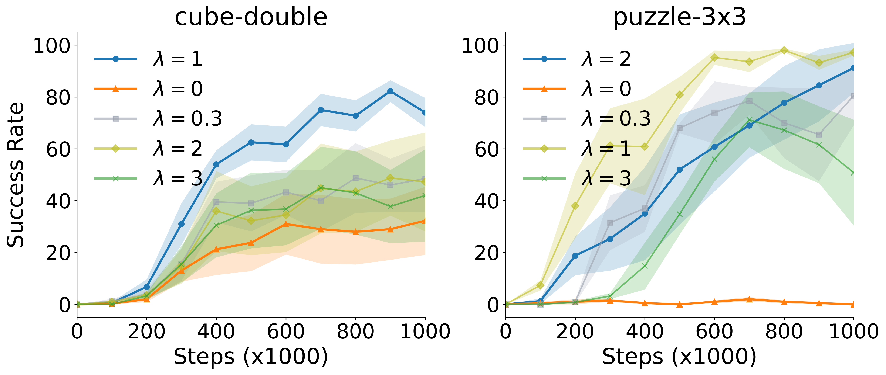

The goal of RL is to get high rewards, and most RL algorithms have to predict how much reward you'll get in the future. However, often there is some uncertainty in these rewards --- in some states, you might sometimes get high rewards and sometimes get low rewards.
In this paper, we use modern, flexible generative AI models (flow matching) to predict the full distribution over future rewards. Unlike prior methods, our method does not require rounding the distribution over future rewards into discrete bins or predict a finite number of quantiles.
Intuitively, we can think of the distribution over values as flowing through time (see the figure). We prove that this flow has a consistency equation, analogous to the standard Bellman equation. This means that we can update the flow directly using a certain loss, without converting back to value predictions.
Key Ideas
üåäReturn vector fields:
We formulate a distributional flow-matching objective to learn return vector fields satisfying the distributional Bellman equation automatically. Additionally, we including a regularization term for stability in practice.
⚖️Confidence weights: Our confidence weights prioritize learning a more accurate return distribution at transitions with higher return variance, as estimated by the return vector field.
üéØ Policy extraction:
For offline RL, we use rejection sampling to maximize Q estimates while implicitly imposing a KL constraint toward a fixed flow behavioral cloning (BC) policy.
For online fine-tuning in offline-to-online RL, we learn a stochastic one-step policy to maximize the Q estimates while distilling it toward the fixed BC flow policy.
Visualizing Return Distributions
The policy completes the task of closing the window and closing the drawer using the buttons to lock and unlock them.
C51 discretizes the return distribution and predicts a noisy multi-modal distribution.
CODAC uses a finite number of quantiles to represent the return distribution and collapses to a single return mode.
Value Flows infers a smooth return histogram resembling the ground-truth distribution.
Quantatively, Value Flows achieves \(3\times\) lower \(1\)-Wasserstein distance averaged across time than alternative methods.
Offline-to-online RL results averaged over 8 seeds on 6 continous control tasks from OGBench.
Value Flows continues outperforming prior state-of-the-art RL and distributional RL methods using online interactions.
Value Flows can be used without any modifications to the vector field objective.
The Key Components of Value Flows

Regularizing the flow-matching loss is important.
Reweighting the flow-matching objective boosts success rates.
BibTeX
@misc{dong2025value,
title={Value Flows},
author={Perry Dong and Chongyi Zheng and Chelsea Finn and Dorsa Sadigh and Benjamin Eysenbach},
year={2025},
eprint={2510.07650},
archivePrefix={arXiv},
primaryClass={cs.LG},
url={https://arxiv.org/abs/2510.07650},
}